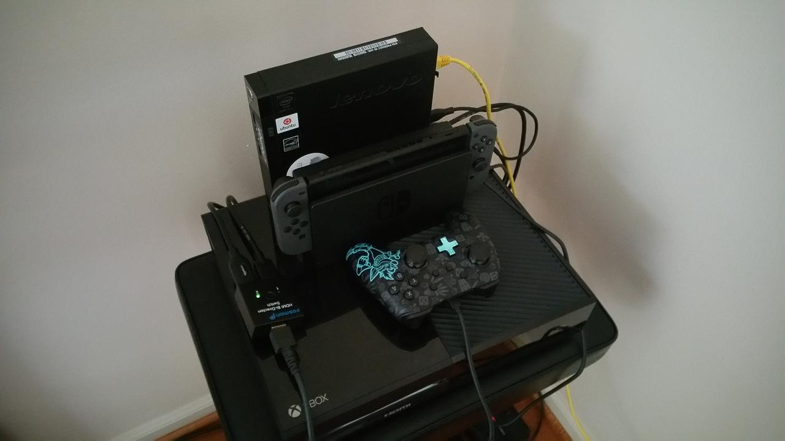

Media PC
I forgotten that, in my house, I have big screen TVs and an unused ThinkCentre- and what prefect use for those two things? Watching Twitch/YouTube/Movies on the big screen! A week ago, I set up my ThinkCentre media PC and I found that it's a nice set up for Ubuntu Linux. It could be better because the DisplayPort connection doesn't stay stable if the computer is left on. It will go back to the computer's speakers after awhile. The only solution at this time is to restart the computer. I also found out that there are no senors on the ThinkCentre but if you watch from a distance and/or with load volumes, you will not hear the fan.
My current set (below) up is the TV hooked up with a full HDMI cable that goes to a switcher. I have this because I also have a Nintendo Switch hooked up to the TV by it's own full HDMI cable in the one of the ports of the switcher. In the other port, a HDMI/DisplayPort connects the ThinkCentre. A powerline adapter provides internet since the computer doesn't have a wireless network card and a Logitech media keyboard. The Ubuntu installation is a minimal 18.04 LTS installation with no extra programs expect I transferred my Firefox settings from my laptop and changed the homepage to Twitch.


Hopefully I will have fun watching things on the big screen, which I haven't done forever!